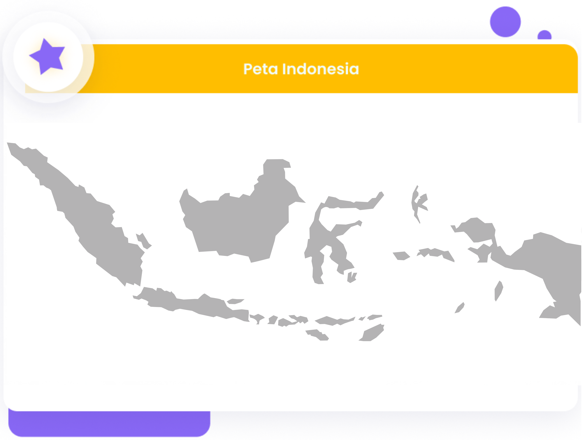

Mengapa Harus PassionPath?
Tau kah kamu?
“87% mahasiswa di Indonesia merasa salah jurusan dengan berbagai alasan”
Dengan fenomena tersebut, PassionPath hadir untuk meminimalisir
permasalahan tersebut. PassionPath
merupakan platform belajar
untuk mencari minat bakat pada siswa SMP dan SMA untuk ke jenjang
lebih lanjut.

Ahli Educational Psychologist dari Integrity Development Flexibility (IDF), Irene Guntur.
Dengan PassionPath kamu akan...
- Menambah wawasan terkait pekerjaan yang kamu minati
- Belajar dari pengalaman para Expert
- Mendapatkan hasil psikotes yang terpersonalisasi